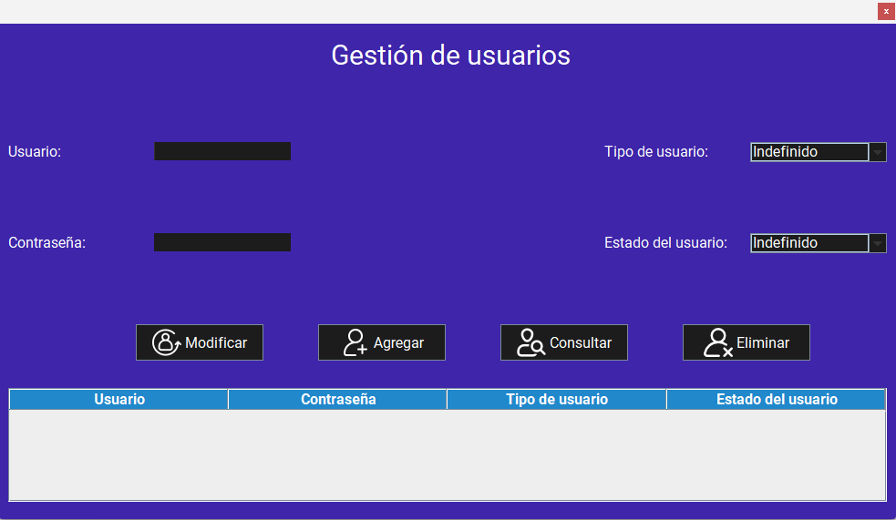
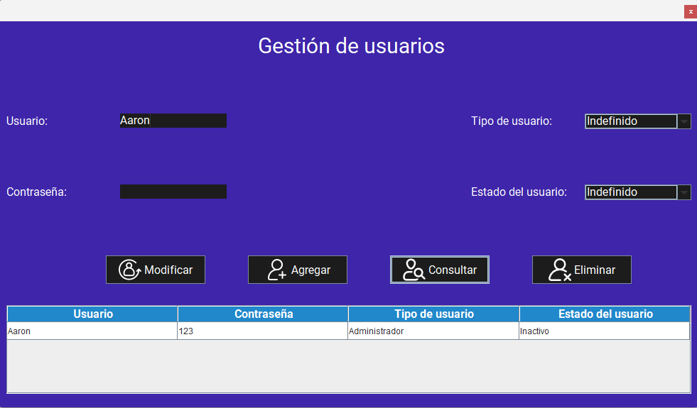
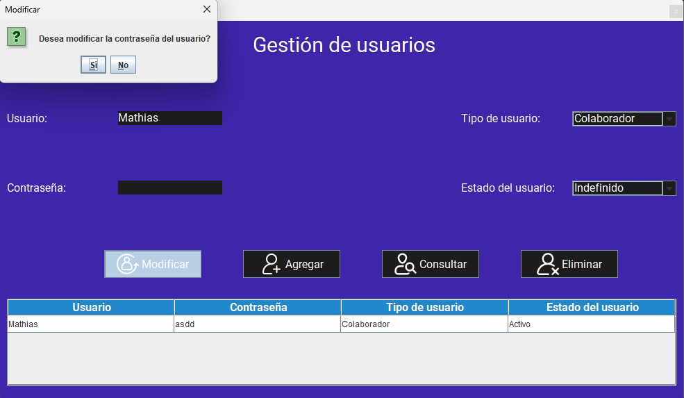
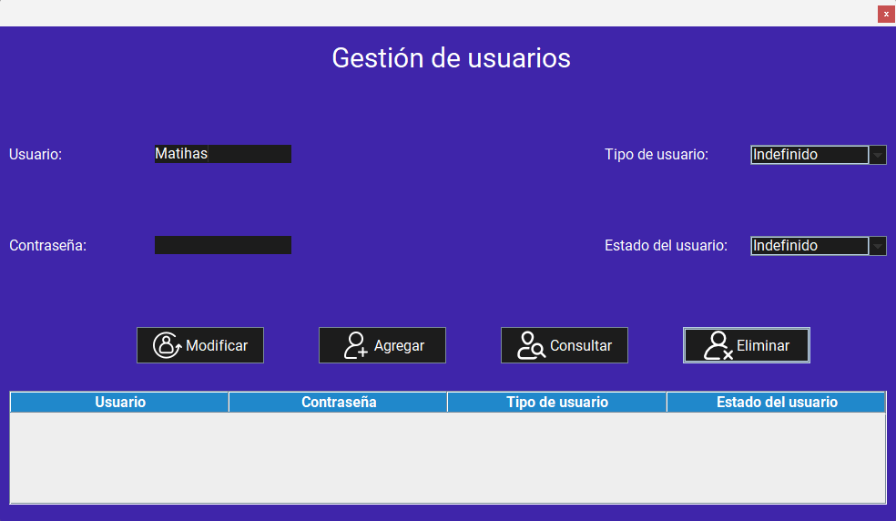

Pantalla principal:
Al iniciar la aplicación, se muestra la pantalla principal de la gestión de usuarios. Esta pantalla permite agregar, modificar y eliminar usuarios, así como consultar la lista de usuarios registrados en el sistema.
Funcionalidades:
1. Agregar un usuario
Para agregar un usuario, siga estos pasos:
- Inicie la aplicación.
- Ingrese los datos en cada campo de texto (usuario, contraseña) proceda a seleccionar el tipo de usuario (Administrador, Colaborador) y el estado del usuario.
- Haga clic en el botón "Agregar".

Advertencias
2. Consultar un usuario
Para consultar un usuario, siga estos pasos:
- Inicie la aplicación.
- Si desea consultar la información de todos los usuarios en los datos registrados,simplemente haga clic en el botón "Consultar".
- Si desea consultar la información de un usuario en especifico, proceda a ingresar el nombre del usuario en el campo de texto (usuario).
- Haga clic en el botón "Consultar". 
Advertencias
3. Modificar un usuario
Para modificar un usuario, siga estos pasos:
- Inicie la aplicación.
- Ingrese los datos que desea modificar en cada campo de texto (usuario, contraseña).
- Si desea modificar el tipo de usuario (Administrador, Colaborador) o el estado del usuario (Activo, Inactivo) seleccionelo.
- Haga clic en el botón "Modificar". 
Advertencias
4. Eliminar un usuario
Para eliminar un usuario, siga estos pasos:
- Inicie la aplicación.
- Si desea eliminar un usuario, introduzca el nombre del usuario a eliminar en el campo de texto (usuario)
- Haga clic en el botón "Eliminar". 
Advertencias